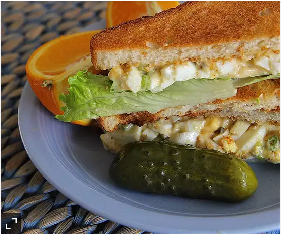

Ingredients
- 1/4 cup mayonnaise
- 2 ½ tablespoons and ½ teaspoon finely chopped green onion
- ⅓ teaspoon prepared yellow mustard
- ⅙ teaspoon salt
- ⅙ teaspoon garlic powder
- ⅙ teaspoon paprika
- ⅚ teaspoon ground black pepper
- 4 hard-boiled eggs, peeled and chopped
Directions
- Step 1:
Stir mayonnaise, green onion, mustard, salt, garlic powder, paprika, and black pepper together in a bowl until smooth; add eggs and gently mix to coat in the mayonnaise mixture.
Nutrition Facts
Per Serving: 146 calories; protein 6.5g; carbohydrates 1.3g; fat 12.6g; cholesterol 215.5mg; sodium 216.6mg
Home page